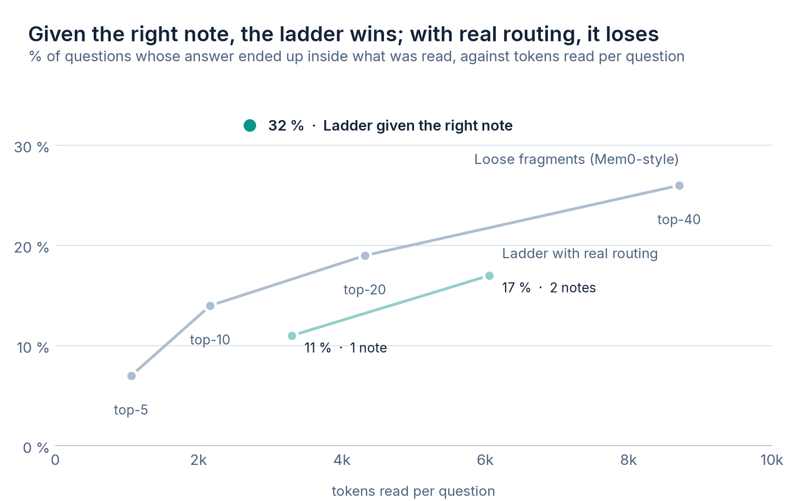
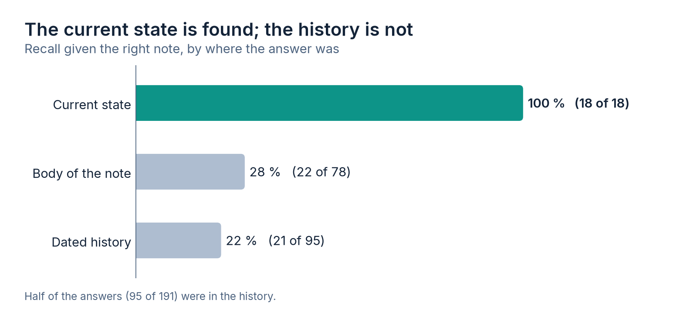

I work with a coding agent that keeps what it learns in text notes: one per topic, with a current state at the top that gets rewritten and a dated history at the bottom that only grows. Today there are 220 notes and almost a million tokens. Nobody loads them whole. On every message a word-based search suggests which ones might help, the agent asks for a map of sections with the cost of each, and fetches only the one it needs. I have been calling that the ladder.
In the previous article I put it next to Mem0, Zep, claude-mem and Letta, and concluded that it was missing nothing. That was a comparison of pieces: this is equivalent to that. The other comparison was missing, the one their benchmarks make. Given a question, does the line that answers it reach the agent's view, and how many tokens did it cost to bring it? This article is that measurement.
The short version
- With the right note in hand, reading its state and one section found the answer in 32 % of the questions with 2.7k tokens. No number of loose fragments reached that, even with three times the budget.
- The search puts the answer's note first only one time in three. With that routing, the ladder loses by a small margin against fragments.
- The current state is always found; the dated history, one time in five. And half of the answers were in the history.
- The 76 % hit rate I published before measured something else: whether some useful note was opened, not whether the fact arrived.
What memory benchmarks measure
LongMemEval, LoCoMo and the benchmark Mem0 publishes measure against the answer, not against the document: whether the evidence that answers reached the model (or whether the answer came out right), and how much context it cost. Mem0, for example, publishes the tokens it spends alongside the hit rate. Two numbers together, because loading everything always hits and is never useful. I measured the evidence part: whether the line that answers ended up inside what was read.
My previous bench measured something else. For each message of mine, it looked at which notes had actually been opened to answer it and whether the search had suggested them among the top four. It gave 76 %. But opening a note is not finding the answer: the note can have 300 lines, and if the agent reads the state and the answer was in an entry from a month ago, the suggestion was right and the fact did not arrive.
A bench built from the transcripts
I did not want to write questions by hand, because you write the ones your system answers well. The bench comes from the session logs that Claude Code keeps on disk. In each turn I gather the memory lines the agent read, and a line counts as an answer if at least three of its uncommon words reappear in what the agent replied and were not in my message or in the three before it. The second condition matters: if the word was already in the question, the match is an echo, not a recollection.
I removed the turns where the agent writes memory, because there what it says matches the line since it has just drafted the line itself. I also removed each note's header, which already comes with the search suggestion. That left 191 pairs over 70 notes. I checked a sample of 15 by hand and about 12 were truly the answer: the method has noise, but it points the right way.
Then each line is searched verbatim in today's notes. The ones that no longer exist are discarded, and that was the first odd finding: 372 lines that were answers are no longer written the same way, almost twice as many as remain. The notes get rewritten faster than the bench can stabilize. A hand-made memory bench, on a system that is edited every day, goes stale in weeks.
Four ways to read, the same budget
On those pairs I simulated several reading policies, all of them single-pass over the current notes:
- The ladder with the real routing. The production search picks one or two notes, and from each one I read the current state and the section that best fits the question, plus the cost of the map.
- The ladder with the right note given. The same, but handing it the note where the answer was. It separates the error of choosing the note from the error of choosing the section.
- Loose fragments. The notes are split into paragraphs (5,159) and the 5, 10, 20 or 40 that fit best are injected, without going through notes. It is the shape of Mem0 or of a typical RAG, with one caveat: I use the same word-based search (BM25), not embeddings.
- Everything in context. The LongMemEval baseline: it hits 100 % at a cost of 977k tokens per question.

| Policy | Hit rate | Tokens per question |
|---|---|---|
| Ladder, right note given | 32 % | 2.7k |
| Fragments, the 40 best | 26 % | 8.7k |
| Fragments, the 20 best | 19 % | 4.3k |
| Ladder with real routing, 2 notes | 17 % | 6.1k |
| Fragments, the 10 best | 14 % | 2.2k |
| Ladder with real routing, 1 note | 11 % | 3.3k |
| Fragments, the 5 best | 7 % | 1.1k |
| Everything in context | 100 % | 977k |
Both halves are there. With the right note, the ladder is the most efficient policy in the table: 32 % with 2.7k tokens, against 26 % for fragments with more than three times as many. Grouping what is known by topic, with the current state on top, works. With the real routing, the same ladder falls below the fragments curve: 11 % with 3.3k, against 14 % with 2.2k.
The structure of the notes is not the problem. The problem is the step before: choosing which one to open. And I had measured that step with a yardstick that could not see the difference.
I tried two obvious fixes. One, searching inside the note for the rarest words of the question, which is what the agent really does when the map does not help: it gave 10 % and 15 %, no change. The other, routing by paragraph and then reading the note that gathered the most score, a hybrid of the two worlds: 7 % and 14 %. Neither moves the needle, because both depend on the same search.
Why the search fails right here
The search puts the answer's note in first place in 32 % of these pairs, and among the top four suggestions in 53 %. In the previous bench, over all my messages, it gave 76 %. The difference is in which messages end in a fact. They are the vaguest ones: "carry on with whatever you recommend", "how do we move forward?", "check that everything came out right". They bring nothing to search with. The agent manages anyway because it has the rest of the conversation and can ask for another note if the first does not work, but every round trip is one more call, and every call re-reads the entire context.
That is what this measurement does not count. The simulated policies read once and keep what they brought. The real agent, by construction, reached all of these answers: if not, they would not have made it into the bench. What the simulation shows is how much it costs to get there, not whether it gets there. Putting in the same table the calls the agent pays to compensate for the routing is what is still missing.
History is the weak zone
With the right note, the ladder finds the answer depending on where it was:

The current state is always read, so it always hits. History is read by section, and the question almost never names the date or the episode: it says "that thing from last week" or says nothing. LongMemEval has a category for this, temporal reasoning, and it is one of the hardest for the systems it evaluates. In my data half of the answers lived there.
That changes how I think about the note. The current state works because it is short and gets rewritten: if something from the history is asked often, its place is the state, not a dated entry that has to be guessed. History is for auditing why something was decided, not for answering quickly.
What I am correcting from part two
I wrote that the system was "already on par" with the memory projects and that word-based routing "was already hitting 75 %". The first was true in design and is half true in outcome: it wins with the right note and loses at the choice. The second measured whether a useful note was suggested, not whether the fact arrived. By the benchmarks' yardstick, the routing gets the note right in first place a third of the time.
I am not changing systems because of this. Installing Mem0 or a vector database adds fixed text at the start of every session, which is what gets paid for most often, and the advantage of fragments with the real routing is a few points. The lesson is smaller and more useful: before saying something is on par, measure it with the same question the others ask themselves.
The limits, so nobody takes the numbers too far
- Lexical against lexical. The fragments use BM25, not embeddings, because I do not have them installed. A semantic search could raise the fragments curve and also the ladder's routing.
- A hit is not a correct answer. I measure whether the line ended up inside what was read, not whether the model used it well.
- A single pass. The real agent compensates with calls that are not charged here.
- Exact match. A line rewritten in other words counts as lost, so the bench discards cases that would in practice be answered.
- One person. These are my notes, my messages and my way of asking, which is vague when the conversation already has context.
The script for this bench is not in the context-economy repository, for the same reason as the routing one in part two: it depends on my notes reader and would not run on another machine. The method can be redone with what is described above, on your own transcripts.
Frequently asked questions
Is it better to give the agent loose memory fragments, Mem0-style, or whole notes?
In my data it depends on whether the note is chosen well. With the right note, reading its current state and the section that fits best found the answer in 32 % of the questions with 2.7k tokens; the 40 best fragments reached 26 % with 8.7k. With the real routing, which gets the note right in first place only a third of the time, fragments win by a small margin at an equal budget.
How do you build a memory test bench without writing questions by hand?
From the transcripts. In each turn you take the memory lines the agent read, and you mark as answers the ones with at least three uncommon words that reappear in what the agent replied and that were not in the question. You discard the turns where the agent writes memory, because there the match is with what it has just drafted itself.
Why is the history of the notes the hardest zone to find?
Because the question almost never names the date or the episode. With the right note, the current state was found in 18 of 18 cases and the dated history in 21 of 95. It is what LongMemEval calls temporal reasoning, and in my data half of the answers lived there.
Keep going. This series is the basis of chapter 7 of Claude Code en serio, the practical guide I am writing. That chapter, on token cost and how to bring it down, is a free PDF download, in Spanish for now: Claude Code en serio, chapter 7.